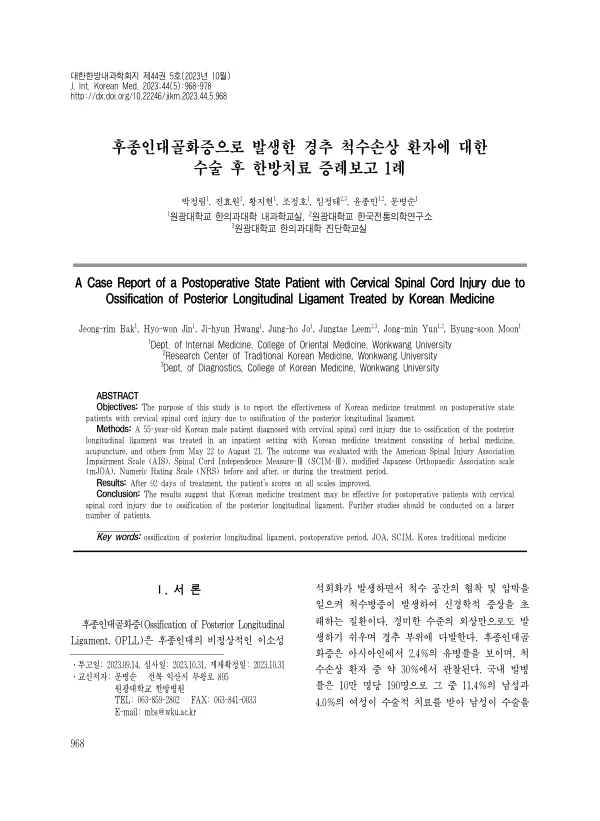

A Case Report of a Postoperative State Patient with Cervical Spinal Cord Injury due to Ossification of Posterior Longitudinal Ligament Treated by Korean Medicine
Bak Jr, Jin Hw, Hwang Jh, Jo Jh, Leem J, Yun Jm, Moon Bs
The Journal of Internal Korean Medicine 44(5):968-978

첫 장 · 오픈액세스First page · open access
논문 소개Summary
후종인대골화증으로 경추 척수손상이 생겨 전방 경추간판절제·유합술을 받은 55세 남성의 수술 후 증례입니다. 수술 뒤 한 달간 재활치료를 받았으나 스스로 앉지 못하고 기립과 보행이 불가능한 상태로 내원했습니다. 92일간 입원해 독활기생탕 가미방에 황기계지오물탕을 합방한 한약과 침·전침, 협척혈 약침을 썼습니다. 미국척수손상학회 척도가 C에서 D로, 척수독립성측정 3판이 20점에서 83점으로, 수정 일본정형외과학회 척도가 7점에서 12점으로 올랐고 이상감각은 숫자통증척도 7-8에서 3으로 줄었으며 연하장애가 호전되어 비위관을 제거했습니다. 단일 증례이고 대조군이 없으며 각 치료의 몫을 나누어 재지 못했습니다.
A postoperative case report of a 55-year-old man who sustained a cervical spinal cord injury from ossification of the posterior longitudinal ligament and underwent anterior cervical discectomy and fusion. After a month of rehabilitation following surgery he still could not sit unaided and was unable to stand or walk. Over 92 days as an inpatient he received a modified Dokhwalgisaeng-tang combined with Hwanggigyejiomul-tang, together with acupuncture, electroacupuncture and pharmacopuncture at the Hyeopcheok points. The American Spinal Injury Association Impairment Scale improved from C to D, the Spinal Cord Independence Measure III from 20 to 83, and the modified Japanese Orthopaedic Association scale from 7 to 12; paraesthesia fell from 7-8 to 3 on the numeric rating scale, and dysphagia improved enough for the nasogastric tube to be removed. This is a single case without a control group, and the contribution of each component of treatment could not be measured separately.
인용Cite
Bak Jr, Jin Hw, Hwang Jh, Jo Jh, Leem J, Yun Jm, Moon Bs. A Case Report of a Postoperative State Patient with Cervical Spinal Cord Injury due to Ossification of Posterior Longitudinal Ligament Treated by Korean Medicine. The Journal of Internal Korean Medicine. 2023;44(5):968-978. doi:10.22246/jikm.2023.44.5.968